Tutorial 16, Part A – Drawing Hair Using Live Path
Effects
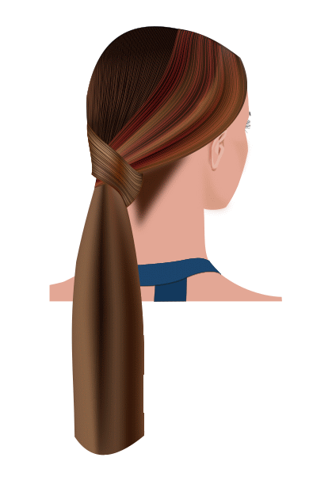
Inkscape’s Live Path
Effects offer the graphic designer a way to draw hair, fur, and other
objects that need to appear as a series of wavy curves. By combining
sub-path stitching, envelope deformation, lattice deformation, and
sub-path interpolation, the artist can draw areas where the filament look
of hair, fur, and textiles adds texture, depth, and attractive detail to
the composition of a piece of artwork.
This tutorial comes in two parts. In this part, Tutorial 16, Part A, we
will focus on the Stitch Sub-Paths Live Path Effect to draw hair. We
will use the Envelope Deformation and Lattice Deformation Live
Path Effects to refine the overall shapes of areas of hair and create the
smooth flow of hair that is trained into a ponytail.
Tutorial 16, Part B, will introduce Sub-Path Interpolation for more
flow effects.
You’ll learn how to do the following techniques:
draw curves that connect two boundary curves.
refine the shape of a multi-curve object using envelope deformation
and lattice deformation tools.
Use transparency and color blending to create a sense of hair depth.
In this tutorial, you will learn how to draw hair. You will be working
with three Live Path Effects. Stitching Sub-paths is a live-path
function with which you draw a starting line or curve, and an ending line or
curve. These two boundaries are called sub-paths and help you define
where a group of cross-lines start and where they end — you are
graphically “stitching” the two sub-paths together.
A second and related live-path function is the sub-path interpolation live
path effect. Instead of stitching two sub-paths together, you draw two lines
or curves that make the sides of an area that you will fill with parallel or
sub-parallel curves that change in shape from one sub-path on one side to
the other path on the other side of the space to be filled. We will cover
sub-path interpolation in the second part of this tutorial.
For more information about Live Path Effects, go to Help >
Inkscape Manual > 8. Live Path Effects (LPEs), and click on Stitch
Sub-Paths or Interpolate Sub-Paths.
Getting Started
Start Inkscape.
Download art file Tutorial16A_end.svg
and store it in a convenient location.
File > Open file Tutorial16A_end.svg. This file displays a
completed illustration of a young woman with a ponytail, facing away from
the viewer.
If you like, choose View > Zoom > Zoom Out to reduce the view of
the finished artwork, adjust the window size, and leave it on your screen
as you work. (Use the Select tool () to select and move the artwork
where you want it in the window.) If you don’t want to leave the
image open, choose File > Close.
Resource: For an illustration of the finished artwork in this
tutorial, see the top of this page.
Young woman – Tutorial 16, Part A starting
artwork.
Choose File > Save As… and save the file as
Ponytail.svg in a convenient location. This file will be your
work file.
The art file contains the image of a young woman facing away from the
camera. The image is on two layers: the bottom layer, which is locked,
contains the woman as a mannequin figure; the second layer contains hair
and right ear.
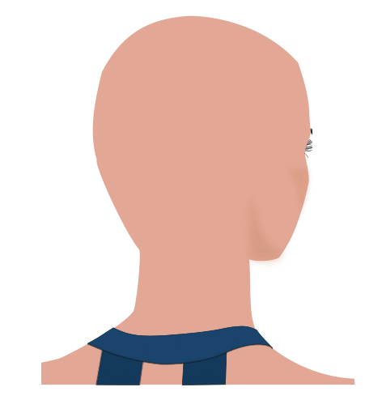
Image of the head of a mannequin – bottom layer.
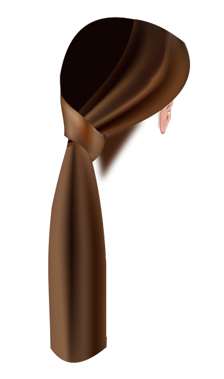
Image of the plan of the mannequin’s hair and ear –
upper layer.
The hair is divided into separate areas. Each area contains hair whose flow
has its own starting and ending points, degree of curvature, color and
gradient shading. Each area has its own place in the overall image stack
to create a sense of hair design as might be done in a salon.
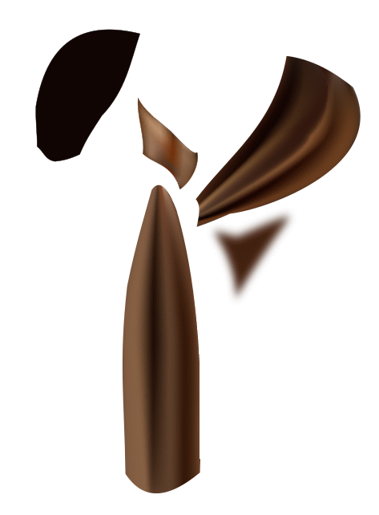
Exploded view of the different areas of hair.
The woman’s ear is its own grouped object so that it can be placed
between two bodies of hair to enhance the sense of a 3-D presentation.
Image of the mannequin’s right ear.
The task of this tutorial is to create overlays that you will place
ontop of the areas of hair to create the look of strands of trained hair
that follow the curvature of each area. The coloration of underlying areas
and overlying hair filaments will be different to give the appearance of
darker hair underneath that is not reached by the light, and lighter-colored,
variegated hair that is reflecting light. The combination colors and styles of
coloration produce subtle depth.
Drawing Hair Using the Stitch Sub-Paths Live Path Effect
The Stitch Sub-Paths Live Path Effect is a great tool for
“stringing together ” a starting and an ending boundary path,
here called sub-paths. This section shows you how to analyze the
underlying geometry that can guide you in determining how hair should flow
and then in drawing it.
Select the top area of hair with the Select tool ().
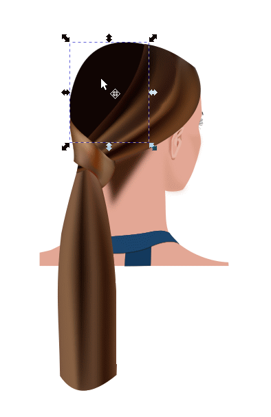
Selecting the top area of hair.
Choose Edit > Duplicate to duplicate the area and then drag the
duplicated area to a side where you can work on it without the distraction
of adjacent hair areas.
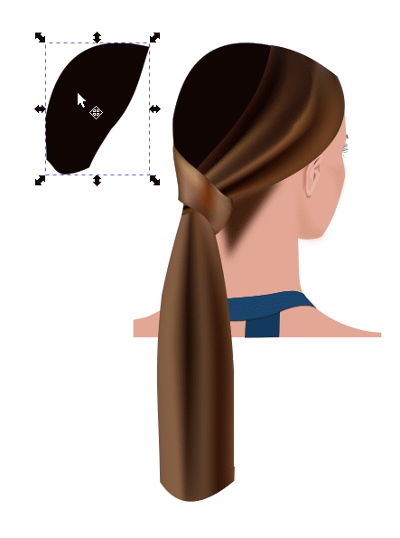
Duplicating and moving the top area of hair.
The hair in this top area ideally appear as if it is coming from over
the top edge and down into the lower, narrower part of the area that is
constricted before it enters the ponytail. The figure below provides an idea
template of how hair filaments might flow from top to bottom.
You will create a “current” of hair that flows from over the
top of the area into the narrow lower portion at the bottom using the
Stitch Sub-Paths Live Path Effect.
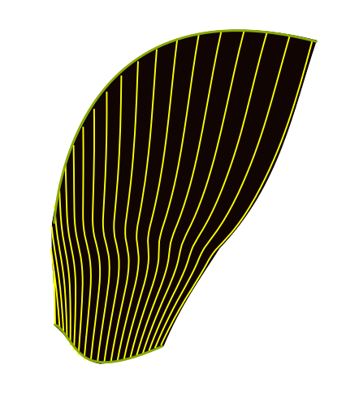
Envisioning stitched paths.
Using the Pen tool (), draw two paths (sub-paths), one that follows the
top curvature of the hair area and ends at a point just above the length of
“straight” curve above the bottom, and the other following the
curve that defines the bottom of the area.
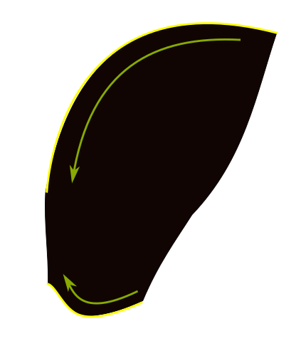
Drawing the sub-paths.
Inkscape now “sees” the two sub-paths as two separate
objects. Stitch Sub-Paths needs to see them as one path in order for
it to work. The Path Combine function merges them into one item.
First, group-select the two sub-paths using <Shift>-click. Each
sub-path is enclosed in its own bounding box.
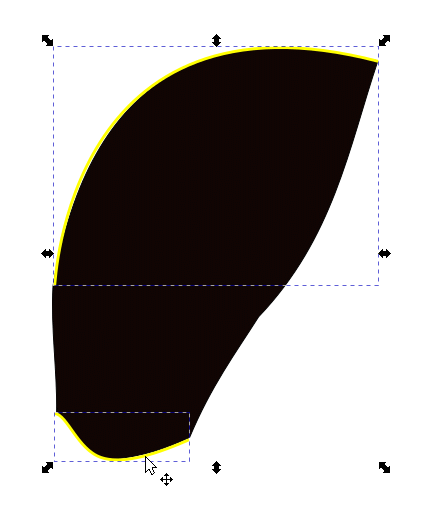
Group-selecting sub-paths.
Choose Path > Combine. The sub-paths are now enclosed in one large
common bounding box and Inkscape now “sees” the two sub-paths as
one compound sub-path.
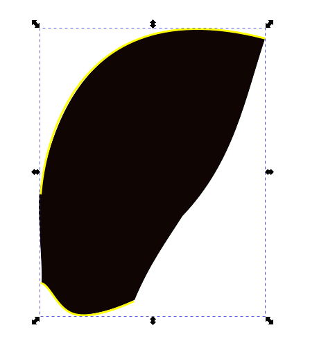
Combining sub-paths.
With the sub-paths still selected, choose Path > Path
Effects…. The Path Effects dialog box appears.
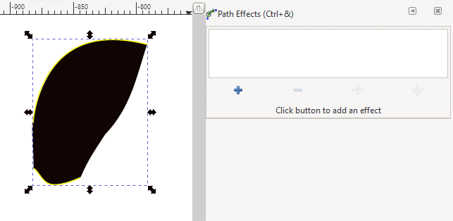
Choosing Path Effects.
Click on the Add path effect plus sign icon ().
The Live Path Effects Selector appears.
Scroll to the bottom of the Live Path Effects Selector until the
Stitch Sub-Paths Live Path Effect appears.
Live Path Effects Selector with the Stitch Sub-Paths
icon highlighted.
Click on the Stitch Sub-Paths icon.
The Stitch Sub-Paths dialog box appears. The Number of paths
might be different from that in the figure below, but that is not a
problem. The lines, however, might have a different stroke color. In the
figure, we chose a stroke color of yellow and a stroke width of 3 px,
using the Fill and Stroke…, Stroke paint and
Stroke style dialog boxes. The lines are easily visible and allow for
easy modification. You will change the color of the lines to a more
“hair-like” color shortly. Note that you can have both the
Fill and Stroke and Path Effects dialogs active at the same
time.
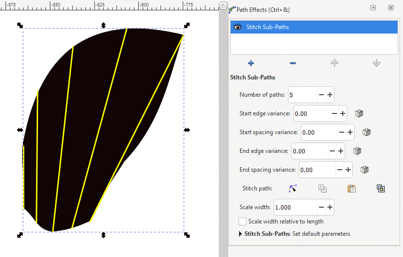
Stitching sub-paths. Note that the original stitch sub-paths
have disappeared.
Change the Number of paths from 5 to 120.
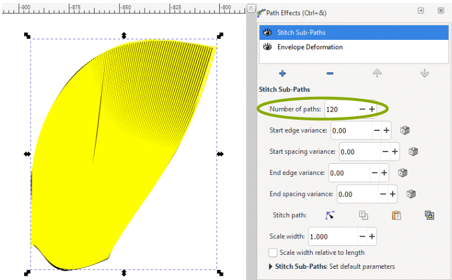
Changing the number of paths from 5 to 120.
Using the Fill and Stroke…Stroke style dialog
box, change the hair stroke Width to 1.000 px. You now have a
better idea of how to morph the hair pattern into what actually looks like
hair.
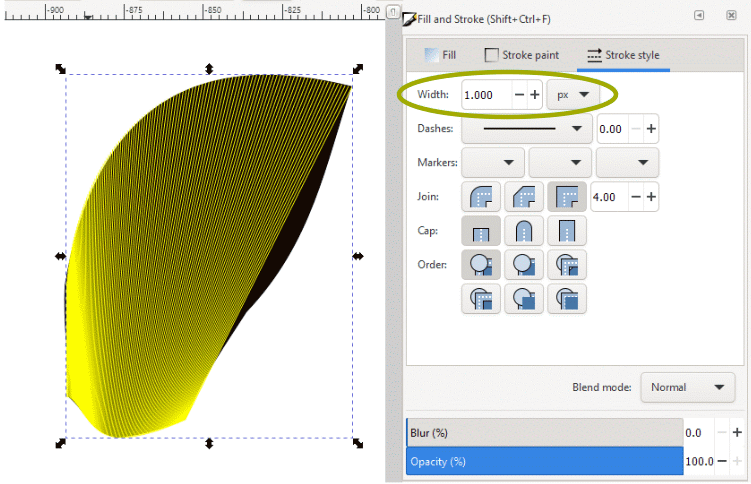
Changing the hair stroke width to 1.000 pixel.
The shadowy wavy patterns in the hair are calle Moiré patterns.
They are frequently visible in folds of cloth, or strands of hair that
overlay each other, creating eye-catching, and yet attractive, interference
patterns, such as waves and rays that radiate in or out in unpredictable
directions.
The right side of the hair needs to be reshaped to match with the
right side of the underlying area. Hair does not usually flow in a purely
linear way – it usually has a degree of curvature in its flow. You will
create a curved flow pattern using the Envelope Deformation Live Path
Effect.
Make the Path Effects dialog active and click on the Add path
effect plus sign icon (). The Live Path Effects Selector
appears.
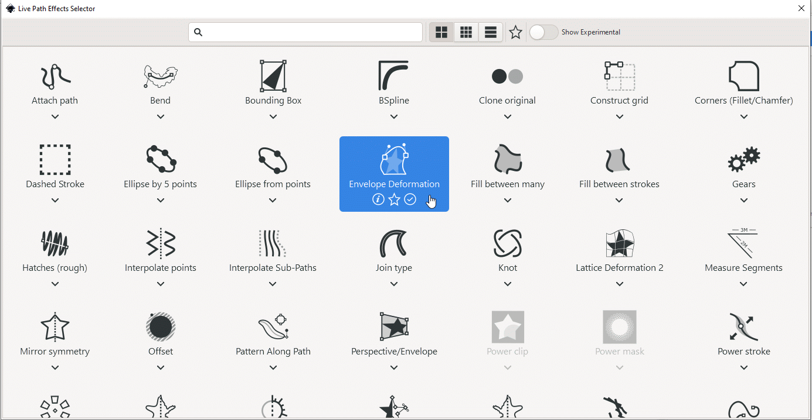
Live Path Effects Selector with the Envelope
Deformation Live Path Effect highlighted.
Click on the Envelope Deformation icon. The Envelope
Deformation dialog box appears.
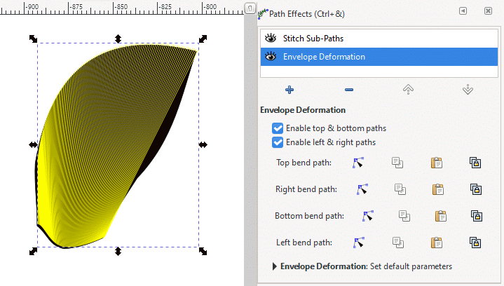
Envelope Deformation dialog box.
The right side of the stitching line object needs the most adjustment
of the four sides. You can accomplish this using the Edit on-canvas
tool for the Right bend path (). Note that the icons for the
four bend path tools look exactly like the Node tool in the toolbox.
Click on the Right bend path tool icon.
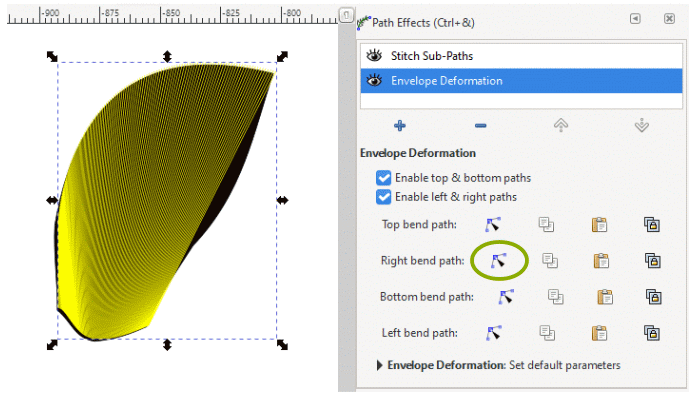
Right bend path tool icon.
The Right bend path tool is activated. A solid blue bounding
box envelope surrounds the hair area in addition to the Select tool
dashed bounding box. The right side of the deformation envelope is highlighted
in red, informing you that it is the active side, awaiting your attention.
Right bend path tool activated.
Place the cursor over the right side of the deformation rectangle.
The cursor changes from the Node cursor to a hand cursor, indicating that it
is hovering over an object that it can manipulate.
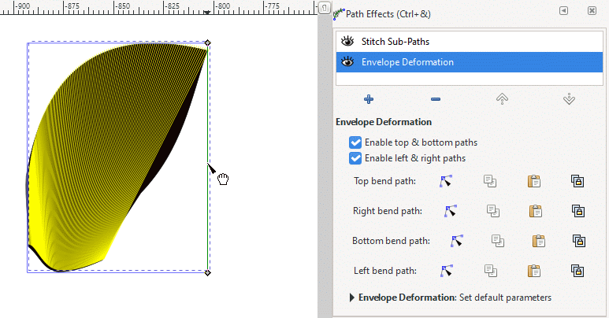
The Bend path cursor changes to a hand cursor when placed
over a bend tool line.
Click on the line and drag it to the lower right. Watch the rightmost
stitch lines as you drag so that you can match the curvature of the lines
with the curvature of the underlying shape.
Use <Ctrl>-Z to undo any action that you consider a mistake and redo.
You also have the option of fine tuning your work later. Any adjustments that
you make now are not set in stone.
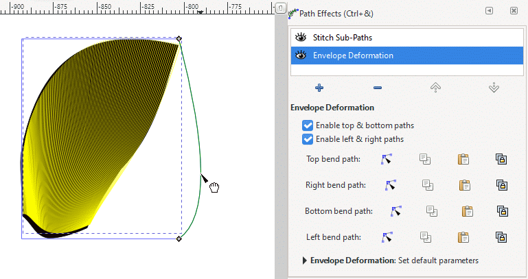
Envelope Deformation 2.
Now the bottom curve needs adjustment. Click on the Edit on-canvas
tool for the Bottom bend path (). The bottom bend path is
highlighted in red, indicating that it is ready for manipulation.
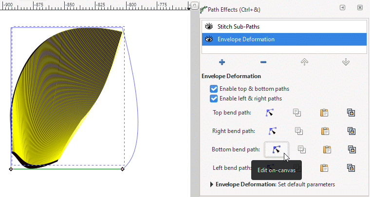
The bottom bend path is active and highlighted in
red.
Click on the left-hand node of the bottom path bend line to activate
it and drag it a little down to the left. Notice how quickly the bottom part
of the stitched paths object responds to small adjustment moves. Stop when
you get a good shape match.
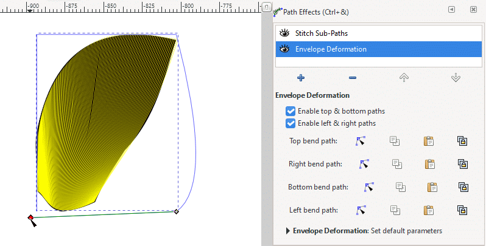
Adjusting the bottom part of the stitched sub-path
overlay.
The left side of the stitched path object can use some
micro-adjustment in the overlap.
Click on the Left bend path tool icon and drag the left-hand node
to the left a very little bit.
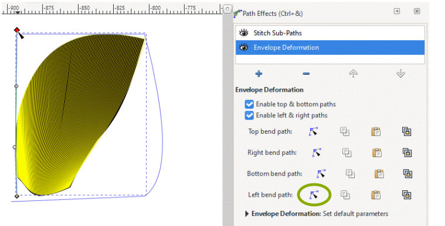
Fine adjusting the left side of the stitch sub-paths
object.
The right side of the stitched sub-path object can use a little more
micro-adjustment in the overlap.
Click on the Right bend path tool icon and pull the right bend path
to the right and down a very little bit to make the rightmost lines cover
the very little bit of exposed dark brown area.
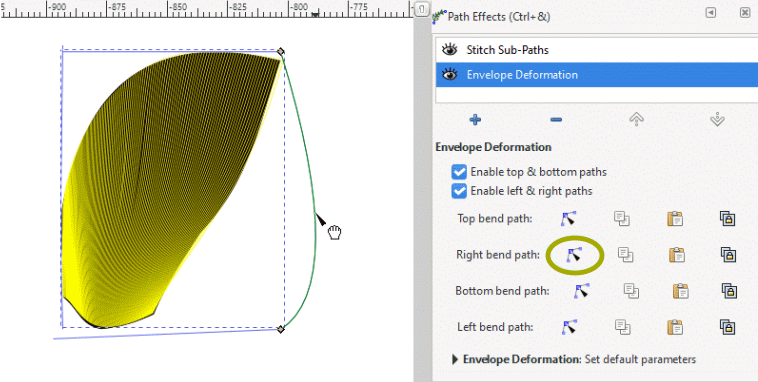
Micro-adjusting the right side of the stitched sub-path
object.
You will now change the color of the hair from yellow to a dark
reddish brown.
In the Fill and Stroke dialog box, click on the Stroke paint
tab, and enter the hexadecimal code for a dark reddish brown stroke color
3c2316ff in the RGBA text box.
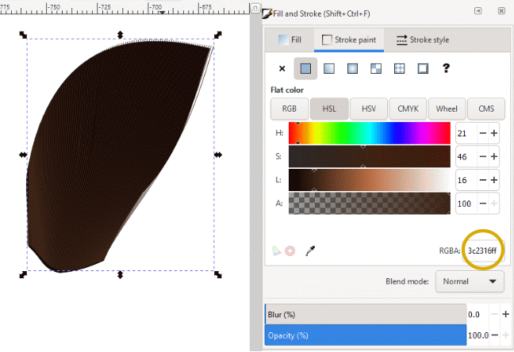
Changing the hair stroke color from yellow to reddish
brown.
The strands of hair are almost invisible against the darker reddish
brown of the background. You will make the hair glisten by giving it a
gradient highlight.
Click on the Linear gradient icon ()
in the Stroke paint dialog box and then click on the Create and
edit gradients tool icon () in the toolbox.
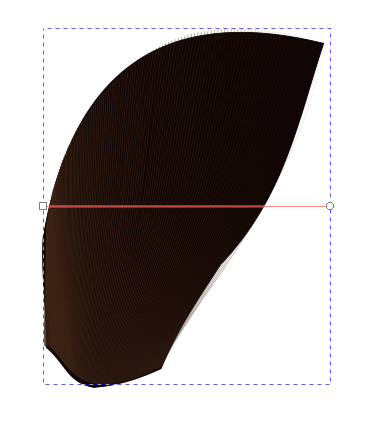
Activating the Linear Gradient tool.
Click on the circular node on the gradient tool line and drag it to
the upper area of the hair area shape. Click on the square node on the
opposite end of the gradient tool line and drag it to the lower area of the
hair area shape.
Double-click in the middle of the gradient line to add a gradient stop
at that point. Its shape is a small diamond, colored blue because it is
active. That midpoint gradient stop will control a band of lighter reddish
brown which will be the highlight.
With the midpoint stop still selected (colored blue), click on the
HSL tab (Hue, Saturation, Lightness), and enter
the numbers shown in the figure below. Move the two nodes on the gradient
tool line to obtain a highlight that looks reasonable to you.
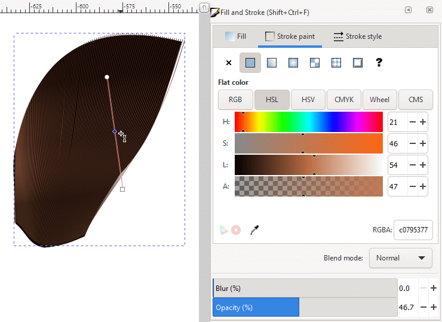
Creating a gradient highlight.
Some stitch lines poke out at the top and extend out on the right.
Micro-adjust them so that they won’t stick out by clicking on the
Select tool () and moving the sizing handles on the object’s
bounding box to align the upper and lower images just right.
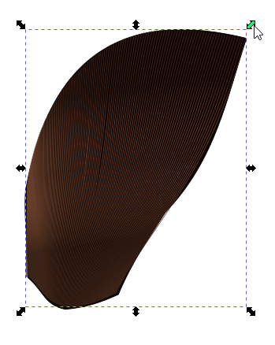
Making fine adjustments to the sub-path stitch
overlay.
Marquee-select the hair shape to group-select both the underlying
dark reddish brown hair area and the stitch-path object. Click the Group
selected objects icon () to group the two
objects.
You will now replace the original flat colored hair area with the
new area with the stitched-sub-path overlay.
Move the grouped hair area to near the model’s head.
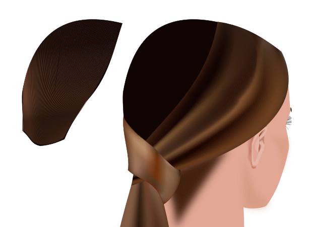
Moving the hair area with overlay to near the model’s
head.
If the Snap Controls Bar isn’t active, choose View
> Show/Hide, and check the Snap Controls Bar checkbox. Click on Enable
snapping (%) (), Snap other points (centers, guide origins,
gradient handles, etc.) (), and Snap centers of
objects (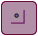). (The Snap centers of objects
icon has been darkened to make details more visible.)
With the Select tool (), drag the finished area of hair so that
it lies directly ontop of the original flat red-brown area. Because the
Snap centers of objects tool is activated, you will see a pop-up
tooltip letting you know when the center of the hair is directly ontop of the
flat color area as shown below.
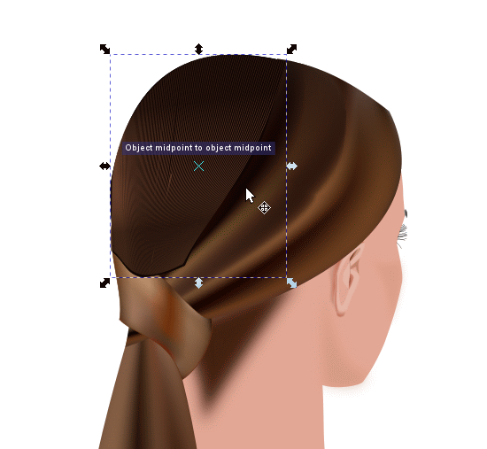
Hair object moved to lie directly ontop of lower flat color
area with tooltip.
With the hair object still selected, click on the Lower selection
one step icon (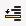) until it disappears underneath
the flat color area and the knot above the ponytail. It is now two levels
down in the image stack.
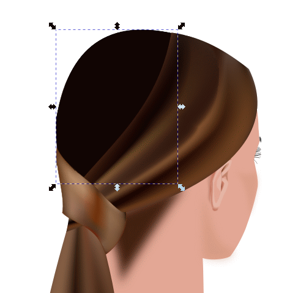
The hair object is now situated underneath the flat color
area and the knot above the ponytail.
Click away from the artwork to deselect it and then click on the flat
reddish brown area. Because the flat colored area lies ontop of the hair
object, it is the object that is preferentially selected.
Move the flat color area off the artwork to reveal the hair object
underneath.
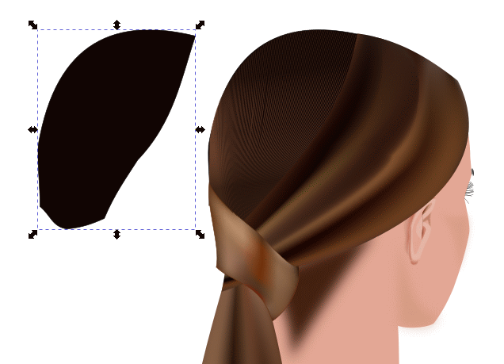
Click-dragging the flat color object off the hair
object.
With the flat color object still selected, press the <Del> or
<Delete> key to delete it.
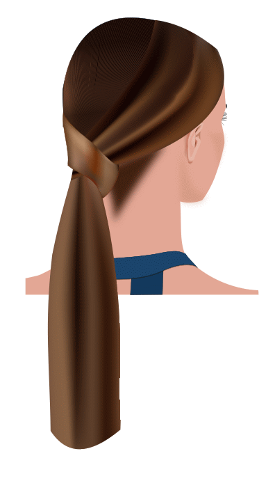
Hair object finished and positioned.
You have just drawn hair with its own color, highlighting, flow, and
placement in the image stack that makes up the young woman’s head.
Choose File > Save to save your artwork.
Drawing Hair Using the Stitch Sub-Paths Live Path Effect, Color
Blending, and the Lattice Deformation 2 Live Path Effect
Function
We explore working with stitching sub-paths in combination with color
blending and using the Lattice Deformation 2 Live Path Effect to create
a second area of trained hair so that it exhibits a natural look to a
viewer.
Select the right-side area of hair with the Select tool ().
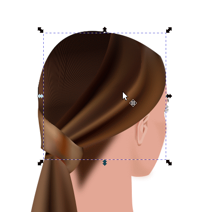
Selecting the right-side area of hair on the
figure.
Duplicate the area by pressing <Ctrl>-D and move the duplicate
to the side of the figure.
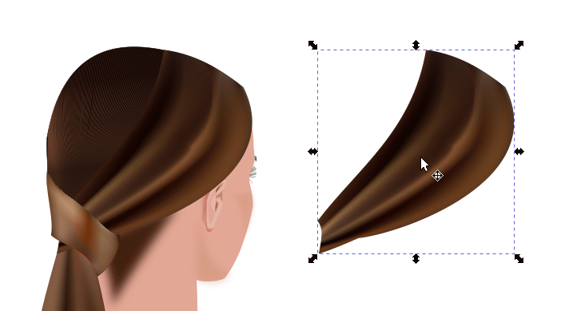
Duplicating the right-side area of hair and moving it to one
side of the figure.
Using the Pen tool (), draw two paths (sub-paths): one following the
top curvature of the hair area and the other following the curve at the
lower left corner of the shape. Draw both paths in the same direction,
that is, from left to right, or from right to left.
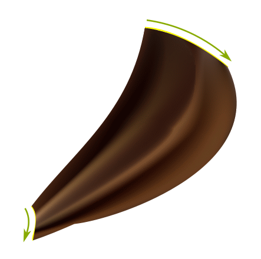
Drawing the two sub-paths in preparation for applying the
Stitch Sub-Paths Live Path Effect.
Group-select the two sub-paths using <Shift>-click. Each
sub-path is enclosed in its own bounding box.
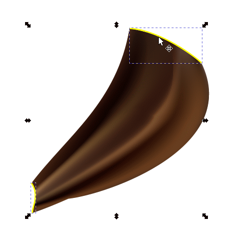
Group-selecting the two sub-paths.
Choose Path > Combine. The sub-paths are now enclosed in one large
common bounding box and are now merged into one compound path.
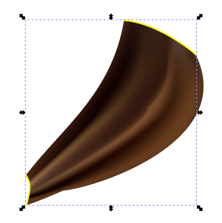
Combined sub-paths.
With the sub-paths still selected, choose Path > Path
Effects…. The Path Effects dialog box appears.
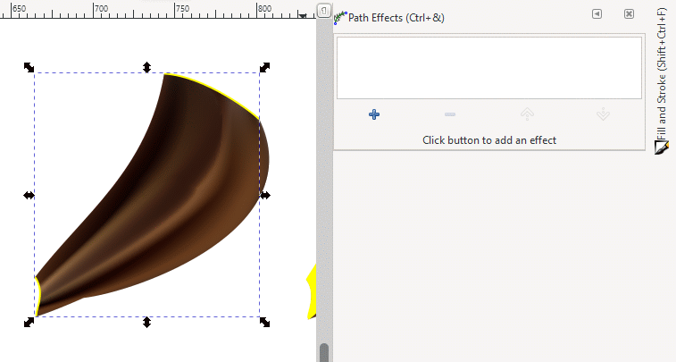
Path Effects dialog box.
Click on the Add path effect plus sign icon ().
The Live Path Effects Selector appears.
Scroll to the bottom of the Live Path Effects Selector until the
Stitch Sub-Paths Live Path Effect appears.
Live Path Effects Selector with the Stitch Sub-Paths
icon highlighted.
Click on the Stitch Sub-Paths icon.
The Stitch Sub-Paths dialog box appears. The Number of paths
is 5, which is the default number for newly created path objects like
this, but that is not a problem. The lines, however, might have a different
stroke color. In the figure, we chose a stroke color of yellow and a stroke
width of 4 px, using the Fill and Stroke…, Stroke
paint and Stroke style dialog boxes. The lines are easily
visible and allow for easy modification. You will change the color of the
lines to a more “hair-like” color shortly.
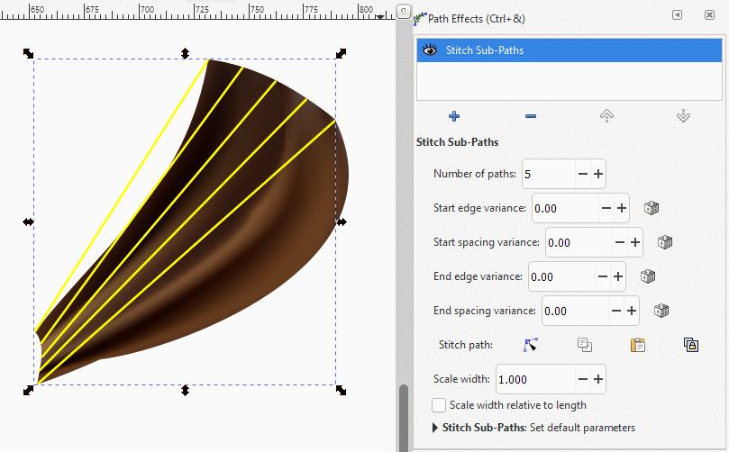
Stitch Sub-Paths applied to sub-paths with five stitch
lines appearing. Note that the two sub-paths have
disappeared.
Change the Number of paths from 5 to 80. The
stitch lines are thick enough (4 pixels width) that they form a swath of
yellow.
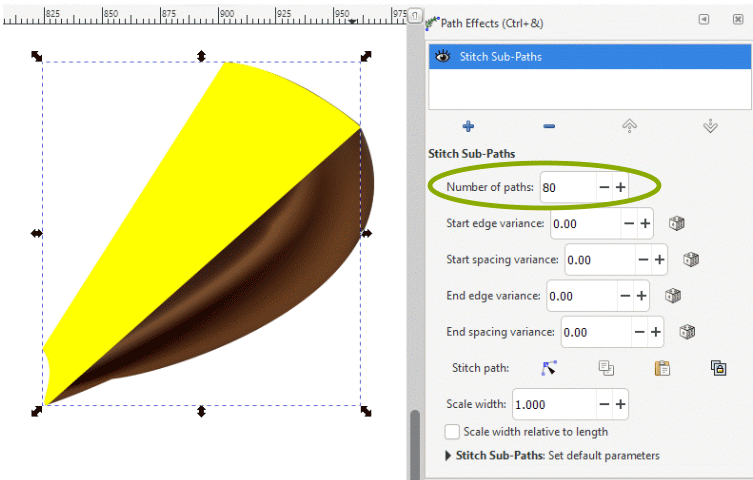
Changing the number of paths from five to 80.
Make the Fill and Stroke dialog box active, click on the
Stroke style tab, and change the stroke Width to
1.500 px. You can start to see individual lines.
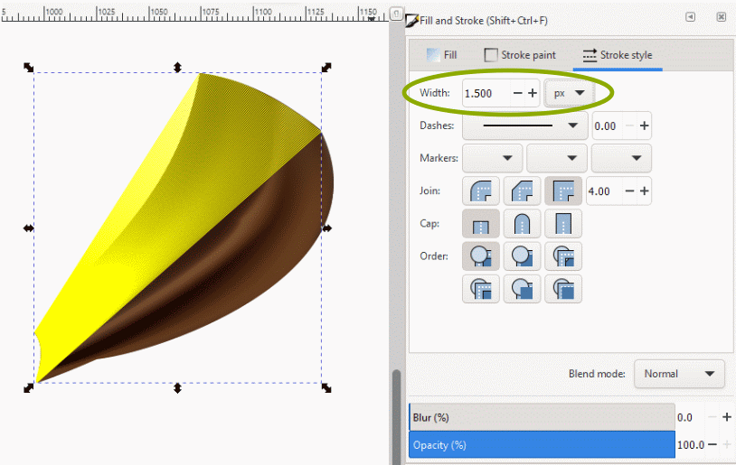
Changing the stroke width from 4 pixels to 1.5
pixels.
Inkscape allows you to randomly change the spacing between adjacent
stitch lines. You will apply this function to create uneven spacing between
lines.
Make the Stitch Sub-Paths dialog box active. Enter 7 into
the Start spacing variance and End spacing variance text
boxes. Then click on the Random number generator icon (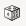) for each option and continue clicking until you get a
spacing style that you like.
Note: each time you click a Random number generator icon,
Inkscape creates a new sequence of random numbers that you can use in turn
in creating unevenness in how far stitch paths are positioned from each
other. This feature is particularly useful in producing the trained, and yet
subtley uneven spacing between hair strands in this project. Larger values
for a random number generator produce larger variations in random values.
They can result in larger spacings between adjacent lines. A value of
0 creates regular spacing, that is, the Random number
generator is turned off.
Experiment with different values for a random number generator and see
what you get. The more you use it, the more you develop your intuition for
how to use it.
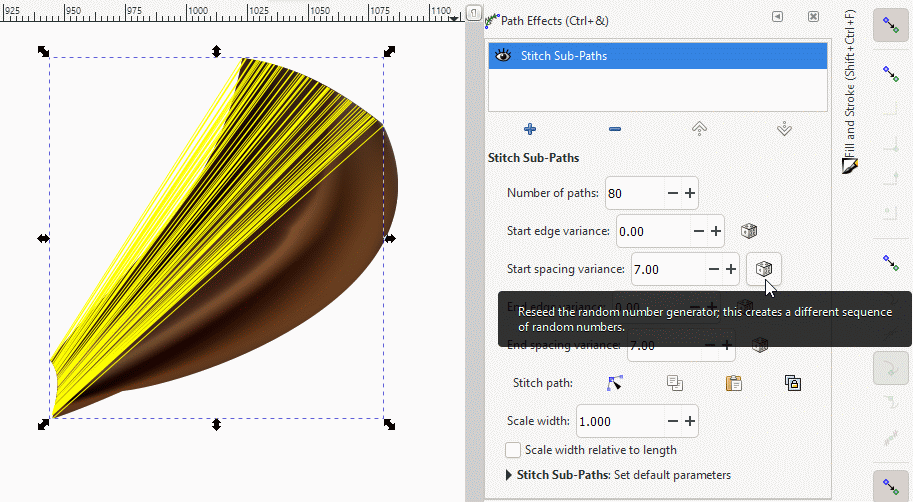
Creating uneven spacing between stitch lines.
Click on the Add path effect plus sign icon ().
The Live Path Effects Selector appears.
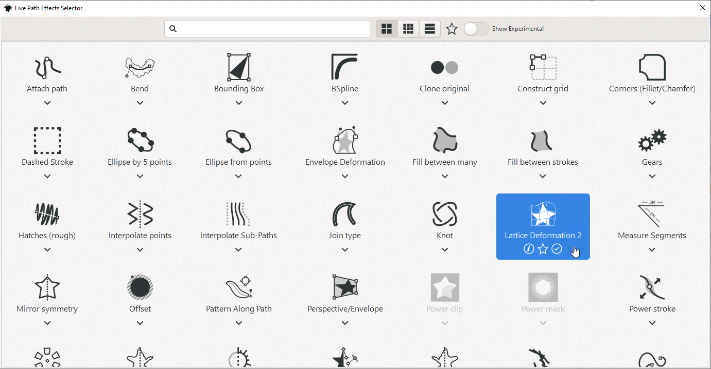
Live Path Effects Selector with the Lattice Deformation
2 Live Path Effect highlighted.
Click on the Lattice Deformation 2 icon. The deformation lattice
(or deformation grid) appears encompassing the stitch line object. Note that
it does not totally include the underlying swath of color, indicating that
only the yellow lines will be affected.
In the Path Effects dialog box, Lattice Deformation 2 has
been added to the path effects listing and is highlighted, indicating that
it is the currently active path effect, awaiting your commands.
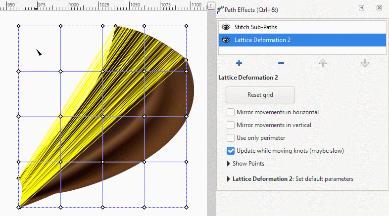
Lattice Deformation 2 Live Path Effect showing
grid.
There are movable nodes where lattice lines cross. Click on a node
to select it and then drag it around to get the feel for how they affect
the yellow lines.
When you feel comfortable moving them around (even somewhat comfortable
is very okay), experiment with moving them so that allow the yellow lines
bend conformably with the bounding left and right edges of the underlying
shape. If you don’t like a result, then copy the node geometry in the
figure below. Fine-tune their positions as you see fit. The more you play
with the lattice, the more confident you will feel using this tool and the
more easily you will be able to manipulation shapes into how you envision
them.
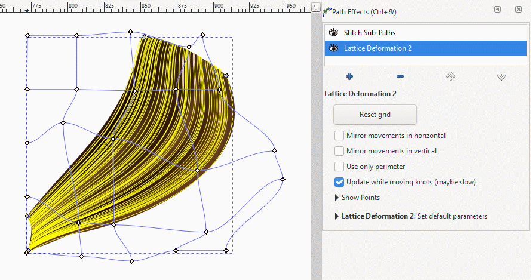
Warping the Lattice Deformation 2 grid to bend the yellow
stitch lines into curve agreement with the edges of the underlying
shape.
The hair color needs to be changed from yellow to a reddish brown
color that matches the underlying color. It should be lighter in color
because it is being illuminated by a light source off-camera. Using the
Screen color blend will heighten the effect of a diffuse light
source and also give the impression that there is underlying hair receiving
less illumination.
Make the Fill and Stroke dialog box active, click on the
Stroke paint tab, and type 7e1b1bff into the RGBA
text field. Click on the down arrow at the right of the Blend mode
selection box and choose Screen in the color blend mode list. Set
the value of Opacity (%) to 70.0.
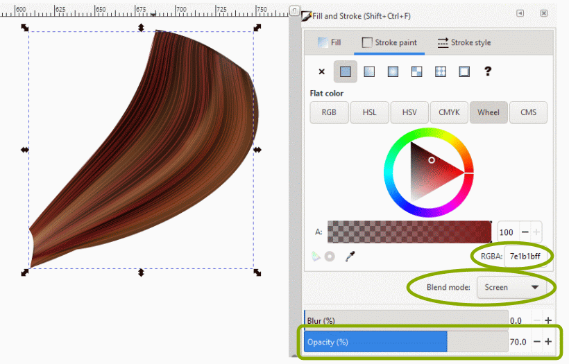70.0 percent" class
= "img-fluid">
Setting the stitch hair stroke to reddish brown and
transparency to 70.0 percent.
Marquee-select the artwork (you need to select both the overlying
hair object and the underlying hair shape) and press <Ctrl>-G
to group them.
Move the grouped hair object onto the figure’s head so that it
completely covers the original area of hair. You can optionally delete the
original area by lowering the grouped object by one level, deselecting the
original area, and then selecting the original one simply by clicking on it
(it is now at the top of the image stack). You can then delete it by
pressing the <Del> or <Delete> key.
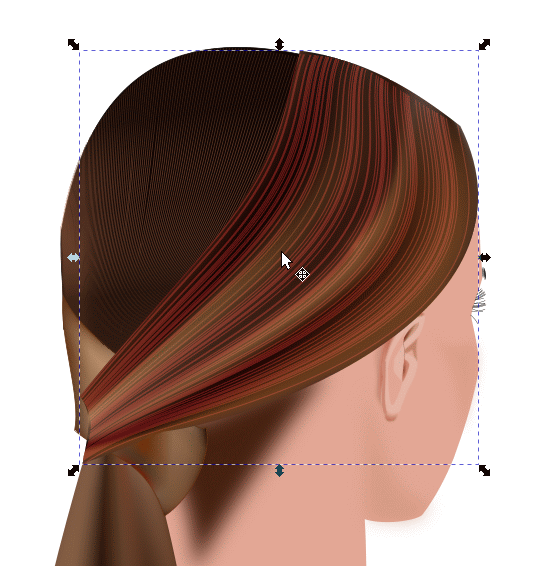
Moving the grouped hair object onto the figure.
If the grouped hair object lies above the knot at the top of the
ponytail, then select the object and click on the Lower selection
one step icon () until it disappears underneath
the knot.
Lowering the grouped hair object so that it lies underneath
the knot at the top of the ponytail.
Deselect the grouped hair object by clicking anywhere off the
artwork. It’s possible that the grouped hair object is not exactly
in place on the figure’s head, as illustrated below. If this is the
case, then it is very easy to fix.
Small misplacement of the grouped hair object.
Zoom in with the Zoom tool or increase the magnification
using the magnification indicator at the lower right corner of the work
window until you can clearly see how large the discrepancy in placement
is.
Select the grouped hair object with the Select tool () and
move it (up, down, right, and/or left) until it’s top curve matches
that of the top area of hair.
Fine-adjusting the placement of the grouped hair
object.
When you are satisfied with now things look, deselect the grouped
hair object.
The top area of hair does not have a random look to the placement of
hair filaments. It is unrealistic to see such mathematical precision in
combed hair. There is always a little bit of unevenness.
Select the top area of hair.
Make the Path Effects dialog box active.
Click on the Stitch Sub-Paths Live Path Effect.
Preparing to add uneven spacing to the top area of
hair.
Set both Start spacing variance and End spacing
variance to 4.00.
Click either or both associated Random number generator icons
() and continue clicking until you get a
spacing style that you like.
Selecting the top area of hair.
When you are satisfied with what you see, deselect the artwork by
pressing <Esc>.
Deselecting the current artwork.
Save your work with File > Save.
Drawing Hair Using the Stitch Sub-Paths Live Path Effect,
Transparency, and the Lattice Deformation 2 Live Path Effect
Function
This section can act as a review of the previous two sections: you will
be using the same tools and techniques as you draw hair that makes up the knot
above the ponytail. Instead of using color blending, you will use the
Opacity tool to use transparency as a way to shade the upper layer of
hair differently from the color texture underneath.
Select the knot of hair above the ponytail with the Select tool
().
Selecting the knot of hair above the ponytail.
Duplicate the area by pressing <Ctrl>-D and move the duplicate
to the side of the figure.
Duplicating the knot and moving it to the side of the
figure.
Using the Pen tool (), draw two paths (sub-paths): one following the
left side of the hair area and the other following the right side of the
shape. Draw both paths in the same direction,
that is, from up to down, or from down to up.
Drawing the two sub-paths in preparation for applying the
Stitch Sub-Paths Live Path Effect.
Group-select the two sub-paths using <Shift>-click. Each
sub-path is enclosed in its own bounding box.
Group-selecting the two sub-paths.
Choose Path > Combine. The sub-paths are now enclosed in one large
common bounding box and are now merged into one compound path.
Combined sub-paths.
With the sub-paths still selected, choose Path > Path
Effects…. The Path Effects dialog box appears.
Path Effects dialog box.
Click on the Add path effect plus sign icon ().
The Live Path Effects Selector appears.
Scroll to the bottom of the Live Path Effects Selector until the
Stitch Sub-Paths Live Path Effect appears.
Live Path Effects Selector with the Stitch Sub-Paths
icon highlighted.
Click on the Stitch Sub-Paths icon.
The Stitch Sub-Paths dialog box appears. The Number of
paths is 5, the default number for new path objects as you saw
in the previous section. The lines, however, might have a different stroke
color. In the figure, we chose a stroke color of yellow and a stroke width
of 4 px, using the Fill and Stroke…, Stroke
paint and Stroke style dialog boxes. The lines are easily
visible and allow for easy modification. You will change the color of the
lines to a more “hair-like” color shortly.
Live Path Effect Selector with the Stitch Sub-Paths
icon highlighted.
Change the Number of paths from 5 to 35. The
stitch lines are so thick (3 pixels width) that they form a swath of
yellow with little spacing between adjacent lines.
Changing the number of paths from five to 80.
Make the Fill and Stroke dialog box active, click on the
Stroke style tab, and change the stroke Width to
1.500 px. You can now see individual lines.
Changing the stroke width from 3 pixels to 1.5
pixels.
Click on the Add path effect plus sign icon ().
The Live Path Effects Selector appears.
Live Path Effects Selector with the Lattice Deformation
2 Live Path Effect highlighted.
Click on the Lattice Deformation 2 icon. The deformation lattice
(or deformation grid) appears encompassing the stitch line object. Note that
it does not totally include the underlying swath of color, indicating that
only the yellow lines will be affected.
In the Path Effects dialog box, Lattice Deformation 2 has
been added to the path effects listing and is highlighted, indicating that
it is the currently active path effect, awaiting your commands.
Lattice Deformation 2 Live Path Effect showing
grid.
Move the nodes around in the lattice grid until the stitch lines
lie conformably with the upper right and lower left edges of the underlying
shape. If you find that you’re having difficulty getting the effect
you want, then copy the node placement in the figure below. The grid
won’t look like an organized lattice anymore, but the stitch lines
flow in agreement with the underlying shape edges, which is what you
want.
Warping the Lattice Deformation 2 grid to bend the yellow
stitch lines into curve agreement with the edges of the underlying
shape.
You will now make the spacing between stitch lines uneven to
simulate real hair.
Make the Stitch Sub-Paths dialog box active. Enter 3 into
the Start spacing variance and End spacing variance text
boxes. Then click on the Random number generator icon () for each option and continue clicking until you get a
spacing style that you like.
Creating uneven spacing between stitch lines.
The hair color needs to be changed from yellow to a reddish brown
color that matches the underlying color, but darker. It should be darker in
color because it is receiving less illumination than the right side of the
figure’s hair and head.
Make the Fill and Stroke dialog box active, click on the
Stroke paint tab, and type 271207ff as the hexadecimal color
value into the RGBA text field if it doesn’t have that value
already. If Normal is not the current color blend mode, then click
on the down arrow at the right of the Blend mode selection box and
choose Normal in the list. Set the value of Opacity (%) to
70.0.
Setting the stitch hair stroke to reddish brown and
transparency to 70.0 percent.
Marquee-select the artwork (you need to select both the overlying
hair object and the underlying hair shape), and press <Ctrl>-G
to group them.
Move the grouped hair object onto the figure’s head so that it
completely covers the original knot shape. You can optionally delete the
original knot by lowering the grouped object by one level, deselecting the
original knot, and then selecting the original one simply by clicking on it
(it is now at the top of the image stack). You can then delete it by
pressing the <Del> or <Delete> key.
Moving the knot object onto the figure.
Zoom in with the Zoom tool or increase the magnification
using the magnification indicator at the lower right corner of the work
window so that you can clearly see whether there is any discrepancy in
placement.
Select the knot object with the Select tool () and
move it (up, down, right, and/or left) until you are satisfied with its
placement.
Good placement of the knot.
When you are satisfied with how things look, deselect the grouped
hair object.
View of the current artwork.
File > Save to save your artwork. File > Quit to exit
Inkscape.
You have learned how to draw and texture hair using the Stitch
Sub-Paths, Envelope Deformation, and Lattice Deformation
Live Path Effects. Color blending and transparency refine your sense of how
to create three-dimensionality using color to give subtle, and yet believable
depth to your artwork. You will finish the artwork of this tutorial in
Tutorial 16, Part B, where you will be introduced to the Sub-Path
Interpolation Live Path Effect which can make filling certain shapes with
lines easier than with Stitch Sub-Paths.
Review Questions
How are Stitch Sub-Paths, Envelope Deformation, and
Lattice Deformation related as workflow tools as you create hair?
How are Envelope Deformation and Lattice Deformation
different from each other?
Review Answers
The Stitch Sub-Paths, Envelope Deformation, and
Lattice Deformation tools are related in your workflow in that you
first draw the hair using Stitch Sub-Paths. To make the hair strands
curved, you need to modify their original straight lengths using either
Envelope Deformation or Lattice Deformation. Envelope
Deformation can be used for simple shapes and Lattice Deformation
should be used for shapes having complex geometries.
Envelope Deformation affects the overall shape of an object
using sides of a bounding box envelope. The top, left, right, and bottom
sides are separable tools whereby you can change the shape of each
side’s line segment and end nodes without affecting the other
sides.
Lattice Deformation works via a lattice grid whereby you can
change the curvature and location of points both on the edges and inside a
shape, producing complex modifications that Envelope Deformation
can’t do.

 ) to select and move the artwork
where you want it in the window.) If you don’t want to leave the
image open, choose File > Close.
) to select and move the artwork
where you want it in the window.) If you don’t want to leave the
image open, choose File > Close.
{kind=link}
{kind=link}

 ), draw two paths (sub-paths), one that follows the
top curvature of the hair area and ends at a point just above the length of
“straight” curve above the bottom, and the other following the
curve that defines the bottom of the area.
), draw two paths (sub-paths), one that follows the
top curvature of the hair area and ends at a point just above the length of
“straight” curve above the bottom, and the other following the
curve that defines the bottom of the area. ).
The Live Path Effects Selector appears.
).
The Live Path Effects Selector appears.
 ). Note that the icons for the
four bend path tools look exactly like the Node tool in the toolbox.
). Note that the icons for the
four bend path tools look exactly like the Node tool in the toolbox.
 ) in the toolbox.
) in the toolbox. ) to group the two
objects.
) to group the two
objects. ), Snap other points (centers, guide origins,
gradient handles, etc.) (
), Snap other points (centers, guide origins,
gradient handles, etc.) ( ), and Snap centers of
objects (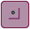). (The Snap centers of objects
icon has been darkened to make details more visible.)
), and Snap centers of
objects (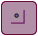). (The Snap centers of objects
icon has been darkened to make details more visible.)